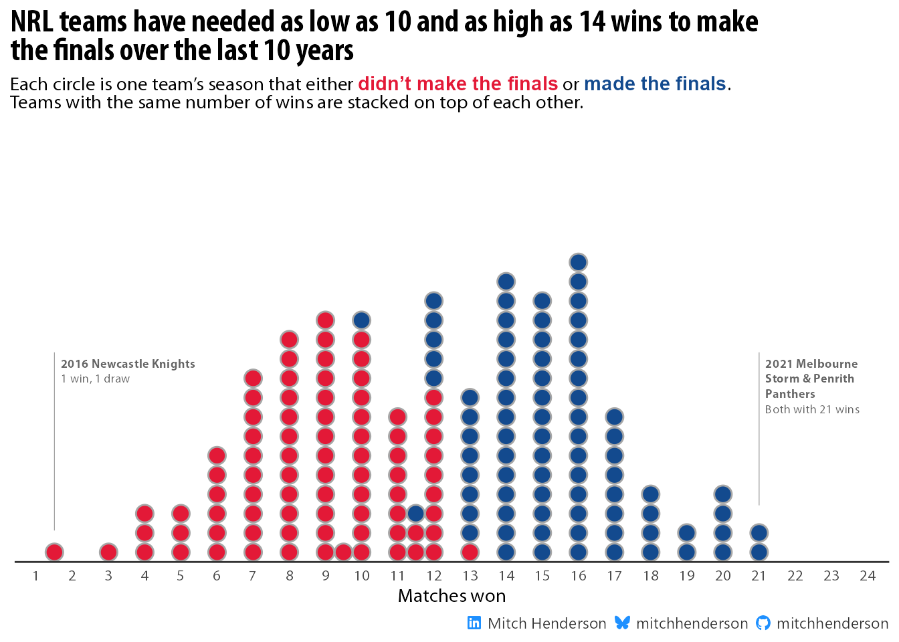
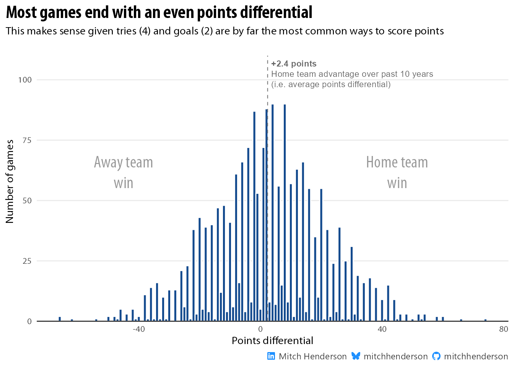

It depends, but Monte Carlo simulations give us a pretty good idea
Author
Mitch Henderson
Published
January 27, 2025
tl;dr: Probably 13.
Sounds like a simple problem, but it isn’t.
It’s pretty common for sports teams to set a goal at the start of a season to make the finals/playoffs . Teams in the NRL1 are no different. The flaw in this goal is that the number of wins needed to qualify for the finals varies from season-to-season depending on the results of other teams. A 12-win season (from 24 games) is enough to qualify some years, but not enough in others.
So how many wins do teams need to be confident they’ll qualify?
Code
# Setuplibrary(tidyverse)library(furrr)library(parallel)library(igraph)library(ggdist)library(data.table)library(ggtext)library(gganimate)library(gt)library(gtExtras)colours <-c("#E31937", "#134A8E")socials <- mitchhenderson::social_caption(icon_colour ="dodgerblue")mitchhenderson::font_hoist("Myriad Pro")theme_set(theme_minimal() +theme(text =element_text(family ="Myriad Pro Regular"),plot.caption =element_markdown(),plot.title =element_markdown(family ="Myriad Pro Bold Condensed", size =18),plot.subtitle =element_markdown(family ="Myriad Pro Regular"),plot.title.position ="plot",panel.grid.minor =element_blank()))
To work it out, I scraped 10 seasons of match result data from Wikipedia (2014-2024 excluding the shortened 2020 season) and saved the results in a file.
# Import match results for 10 seasons (up to 2024)import <-read_csv("https://raw.githubusercontent.com/mitchhenderson/mitchhenderson.dev/refs/heads/main/posts/2025-01-18-how-many-wins-do-nrl-teams-need-to-make-the-finals/2014-2024_nrl_match_results.csv")
I calculated the points differential for each game and created binary (0 or 1) indicator columns for the winning/losing team and draws. I could then use this match level data to calculate the competition ladder at the end of the season for each year in the data set. The table below shows only 2014, but the final table has been calculated for all available seasons.
All 10 seasons can then be visualised together as a dot plot. Notice how one team won 10 games one season and made the finals (blue circle at the top of the 10 wins column) and another team won 13 games in a different season but didn’t qualify (red circle at the bottom of the 13 wins column).
Code
observed_summary_results |>mutate(made_finals =factor(made_finals)) |>arrange(made_finals) |>ggplot(aes(x = total_wins, fill = made_finals, colour = made_finals)) +geom_dotsinterval(group =NA) +annotate("segment", x =1.5, xend =1.5, y =0.075, yend =0.5,linewidth =0.2,colour ="grey60") +geom_richtext(data =tibble(y =0.5, x =1.5,label = glue::glue("<span style=\"font-family:'Myriad Pro Bold'; \">2016 Newcastle Knights</span><br>1 win, 1 draw")),aes(x, y, label = label),family ="Myriad Pro Regular",hjust =0, vjust =1, fill =NA, label.color =NA, size =2.5, colour ="grey40") +annotate("segment", x =21, xend =21, y =0.135, yend =0.5,linewidth =0.2,colour ="grey60") +geom_richtext(data =tibble(y =0.5, x =21,label = glue::glue("<span style=\"font-family:'Myriad Pro Bold'; \">2021 Melbourne<br>Storm & Penrith<br>Panthers</span><br>Both with 21 wins")),aes(x, y, label = label),family ="Myriad Pro Regular",hjust =0, vjust =1, fill =NA, label.color =NA, size =2.5, colour ="grey40") +labs(x ="Matches won",title ="**NRL teams have needed as low as 10 and as high as 14 wins to make<br>the finals over the last 10 years**",subtitle = glue::glue("Each circle is one team's season that either <span style='color: {colours[1]}; font-size:11pt; font-family:Myriad Pro'>**didn't make the finals**</span> or <span style='color: {colours[2]}; font-size:11pt; font-family:Myriad Pro'>**made the finals**</span>.<br>Teams with the same number of wins are stacked on top of each other."),caption = socials) +scale_x_continuous(limits =c(1.5, 23.5),breaks =seq(1, 24, 1)) +scale_y_continuous(limits =c(0, 1),expand =expansion(mult =c(0, 0.05))) +scale_fill_manual(values = colours) +scale_colour_manual(values = colours) +theme(legend.position ="none",axis.line.x =element_line(colour ="grey20"),axis.title.y =element_blank(),axis.text.y =element_blank(),axis.ticks =element_blank(),panel.grid =element_blank())

There are a few ways to approach calculating the probability of making the finals based on a given number of wins. Doing this requires a mindset shift from thinking only about the outcome of a single event (qualify for finals vs not) to considering the expected frequency of an outcome occurring over a large number of events involving uncertainty and randomness.
Analytically specify the probability
If this is possible, god knows I don’t know how to do it. Given the complexity of the competition structure with all its dependencies and constraints, specifying the true mathematical probability would be an extremely high-dimensional optimisation problem. Even if it is possible, it would require a very sophisticated and computationally intensive solution.2
Simply calculate the proportion of teams that qualified for each number of wins the data set
This isn’t a good idea. With 17 teams and each of them playing 24 games in a season, the number of ways a season could play out to determine the final competition ladder is astronomically large. We only have 10 seasons of data; a tiny fraction of all the possible combinations of win-loss records and finals standings to use in our calculation. The true probability of making the finals can’t be estimated with acceptable accuracy based on such a small sample of data. To demonstrate, the data we have shows no teams with 11 wins qualifying for the finals (from 8 times this has occurred). Does that mean the probability of qualifying is 0%? No. This is just noise (i.e., random variability) that we happen to have observed in our sample. Evidence of this is a team that only won 10 games qualified for the finals in a different season.
Fitting a linear model to the data
This also isn’t a good idea. On the surface, a logistic regression model sounds okay as we’re trying to estimate the probability of a binary outcome (making the finals or not), but the assumptions baked into these models aren’t a great fit for this problem. Statistical models need to make assumptions so the complexity of the world can be simplified into something quantifiable and useful. In the case of generalised linear models like logistic regression, one of those assumptions is a linear relationship between the predictors and the transformed outcome. This is often useful because as it allows a smooth curve to be fit through the data, but it breaks down here without awareness of the fundamental competition constraints (e.g., for one team to win, the other has to lose). This means that they can (and do in this case) predict impossible scenarios like making the finals with a win-loss record that is mathematically impossible for them to qualify.
Monte Carlo simulation
These are a class of methods that basically use randomness to solve problems. They allow us to skip most of the hard maths and use computer simulations to get practically the same answers that could have very painfully been calculated analytically anyway. The idea is that we define a data generating process that mimics the way that data is generated in the real world, and then let the power of computers generate a huge amount of data. This lets us explore tens or hundreds of thousand (or more) possible season outcomes to give us a fuller picture of the probability of making the finals for each win-loss record. This is especially important for edge cases and unusual season results that are unlikely to have occurred in a small sample of historical data like ours. The beauty is that we can build in all the dependencies and constraints of the competition structure so we know the simulated data generated will adhere to it. It’ll capture the non-linear and threshold effects that exist as a result of the competition format. With enough simulated seasons, we can simply count the proportion of teams that qualify for a given number of wins to estimate the probability. The law of large numbers tells us this converges to the true probability.
Simulating a season draw
To begin defining the data generating process, we need a way to randomly generate a season draw. This was tricky. 17 teams need to play 24 matches against other teams, 12 home and 12 away, where you play 8 teams twice and the other 8 teams only once (and of course accounting for the dependencies of head-to-head matches so one team’s schedule can’t be considered in isolation). I found a way to do it using network graph theory.
Code
# Define vector of team namesteams <-unique(data$home)# Create random graph with 17 nodes (teams) # Connect each node to 12 other nodes for home games and another 12 for away games# Convert to tibble and add team namessimulate_season_draw <-function(){ graph <-sample_degseq(rep(12, length(teams)),rep(12, length(teams)),method ="simple.no.multiple") edges <-as_edgelist(graph)tibble(home = teams[edges[, 1]],away = teams[edges[, 2]] )}
The output is one randomly simulated season draw. Here is 10 random match-ups from a simulated draw.
Now we need results for these games. To do this we need to make an assumption about how we can realistically generate random results for matches between these teams. The points differential between teams in a match determines who wins and loses, so we need to mimic the way points differentials are distributed in real NRL games. This is how they’re distributed in the 2014-2024 data set we have.
Code
average_10yr_points_diff <- data |>pull(points_differential) |>mean()data |>ggplot(aes(x = points_differential)) +geom_histogram(binwidth =1, colour ="white", fill = colours[2]) +labs(y ="Number of games", x ="Points differential",title ="**Most games end with an even points differential**",subtitle ="This makes sense given tries (4) and goals (2) are by far the most common ways to score points",caption = socials) +scale_y_continuous(expand =expansion(mult =c(0, 0.05)),breaks =seq(0, 100, 25)) +annotate("segment", y =0, yend =110, x = average_10yr_points_diff, xend = average_10yr_points_diff, linetype ="dashed",linewidth =0.4,colour ="grey50") +geom_richtext(data =tibble(y =102, x = average_10yr_points_diff,label = glue::glue("<span style='font-family:Myriad Pro Regular'>**+{scales::number(average_10yr_points_diff, accuracy = 0.1)} points**<br>Home team advantage over past 10 years<br>(i.e. average points differential)</span>")),aes(x, y, label = label),family ="Myriad Pro",hjust =0, fill =NA, label.color =NA, size =3, colour ="grey40") +geom_richtext(data =tibble(y =61, x =45,label = glue::glue("Home team<br>win")),aes(x, y, label = label),family ="Myriad Pro",hjust =0.5, fill =NA, label.color =NA, size =6, colour ="grey60") +geom_richtext(data =tibble(y =61, x =-45,label = glue::glue("Away team<br>win")),aes(x, y, label = label),family ="Myriad Pro",hjust =0.5, fill =NA, label.color =NA, size =6, colour ="grey60") +theme(panel.grid.major.x =element_blank(),axis.line.x =element_line(colour ="grey20"))

This is an interesting distribution. The points differentials on even numbers are far more frequently observed than odd numbered differentials. This is an influence of competition constraints. Tries (4) and goals (2) are far more common than field goals (1), so it’s expected that even numbered point differences are more likely to occur. Out of interest, I also added the average points differential across the data set as an annotation in the visual (+2.4). This is the expected advantage of playing at home over the last ~10 years.
Accounting for team quality
Because this distribution is so unique, I’ll randomly sample directly from it to populate the match results in my simulated seasons (instead of sampling from a theoretical distribution). I don’t want to sample completely at random though, because the teams are not of equal quality. I want the better teams to have a higher probability of winning against the worse teams, weighted by how much better / worse they are. To do this, we need a measure of each team’s strength. There are many ways to approach this, but for simplicity I’ll just use the Sportsbet odds for winning the 2025 competition.
The bookmaker odds are converted to an implied probability of winning the competition. This will be my measure of relative team quality.
Code
# Sportsbet odds for to win 2025 GF# Collected on 21st Jan 2025sportsbet_odds <- tibble::tribble(~team, ~sportsbet_odds,"Brisbane Broncos", 8.5,"Canberra Raiders", 67,"Canterbury Bankstown Bulldogs", 17,"Cronulla Sutherland Sharks", 13,"Dolphins", 61,"Gold Coast Titans", 61,"Manly Warringah Sea Eagles", 16,"Melbourne Storm", 3.85,"New Zealand Warriors", 51,"Newcastle Knights", 61,"North Queensland Cowboys", 26,"Parramatta Eels", 41,"Penrith Panthers", 4.8,"South Sydney Rabbitohs", 18,"St George Illawarra Dragons", 81,"Sydney Roosters", 20,"Wests Tigers", 46 )# Get a team strength measure (based on Sportsbet odds to win premiership)odds_to_probabilities <-function(odds) { probabilities <- (1/ odds) /sum(1/ odds)}sportsbet_implied_probabilities <- sportsbet_odds |>mutate(implied_probabilities =odds_to_probabilities(sportsbet_odds)) |>select(-sportsbet_odds)sportsbet_implied_probabilities |>arrange(-implied_probabilities) |>gt() |>gt_theme_538(quiet =TRUE) |>fmt_percent(implied_probabilities, decimals =1)
team
implied_probabilities
Melbourne Storm
24.3%
Penrith Panthers
19.5%
Brisbane Broncos
11.0%
Cronulla Sutherland Sharks
7.2%
Manly Warringah Sea Eagles
5.8%
Canterbury Bankstown Bulldogs
5.5%
South Sydney Rabbitohs
5.2%
Sydney Roosters
4.7%
North Queensland Cowboys
3.6%
Parramatta Eels
2.3%
Wests Tigers
2.0%
New Zealand Warriors
1.8%
Dolphins
1.5%
Gold Coast Titans
1.5%
Newcastle Knights
1.5%
Canberra Raiders
1.4%
St George Illawarra Dragons
1.2%
Accounting for home field advantage
Next I need to account for home field advantage. Home teams won ~55.8% of games in the data set (1,084/1,944). If two teams of equal quality play, I want to adjust the probability of winning for the home team from 50% (based only on relative team quality) to ~55.8% so it matches the proportion of home wins observed in the 10 seasons of data. I can do this by searching across all potential home advantage multipliers from 1 (no home advantage) to 2 (playing at home doubles team quality) to find the optimal value that returns ~55.8% home win probability against equally matched opponents.
Code
perc_home_win <-mean(data$points_differential >0)# We know that for equally matched teams:# 1. Without home advantage, each team has 50% chance of winning# 2. Historical data shows home teams actually win 55.8% of the time# 3. We need a multiplier that turns 50-50 into 55.8-44.2 (assuming no draws)# Function to calculate win probability for equal teams given a multipliercalc_win_prob <-function(multiplier) {# Both teams start with equal strength home_strength <-0.5 away_strength <-0.5# Apply multiplier to home team adjusted_home <- home_strength * multiplier# Calculate resulting probability prob <- adjusted_home / (adjusted_home + away_strength)return(prob)}# Function to find multiplier that gives desired win probabilityfind_optimal_multiplier <-function(target_prob) {optimise(function(m) abs(calc_win_prob(m) - target_prob), interval =c(1, 2), # Search between 1-2x multiplier maximum =FALSE)$minimum}# Find multiplier that produces observed 55.8% home win rateoptimal_multiplier <-find_optimal_multiplier(perc_home_win)
This method carries some simplifying assumptions. In reality, some teams are pretty likely to benefit more from playing at home than others. That isn’t accounted for here (all teams will be given the same home advantage based on historical data). Also the multiplier used to apply the home team advantage was found by optimising for the win rate between two teams of equal quality. This was to best isolate the degree of home advantage without the influence of differences in team quality. The mathematically optimal multiplier will change with each difference in relative team quality (e.g., unequally matched teams).
Simulate the match results
Now I can finally define a function that simulates a match. It compares the implied probability of winning the competition after accounting for home field advantage to calculate the home team win probability for the game. A random number is drawn from a uniform distribution (0 to 1) and if this number is less than the home win probability, then the match is assigned as a home win. Once we know whether the home or away team wins, a random sample is drawn from either the positive (home wins) or negative (away wins) observed points differential distribution (i.e., empirical distribution).
Code
# Function to simulate a single matchsimulate_match <-function(home_strength, away_strength, diff_vector) { home_advantage_multiplier <- optimal_multiplier# Apply home advantage to home team's strength adjusted_home_strength <- home_strength * home_advantage_multiplier# Calculate win probabilities based on Sportsbet's Grand Final win probabilities home_win_prob <- adjusted_home_strength / (adjusted_home_strength + away_strength)# Compare to uniform distribution to determine if it's a home win or away win is_home_win <-runif(1) < home_win_prob# Sample the differentialif (is_home_win) { diff <-sample(diff_vector[diff_vector >0], 1) } else { diff <--sample(diff_vector[diff_vector >0], 1) }return(diff)}
To demonstrate, here I generate 15 random points differential results for a game between a home team with a 5% chance of winning the competition and an away team with a 20% chance.
Notice how most of the values are negative (meaning the away team won).
This incorporates the away team being of higher quality (20% chance of winning the competition vs 5%) and the home team benefiting from the home field advantage. The proportion of away team wins over a very large number of simulations gives us an estimated probability of the away team winning this game that approaches the true value.
There are again some simplifications at play here. Firstly, draws/ties are not considered (or possible) with this data generating process. I think this is fine as only 0.25% of matches in the data set ended in draws (5 from 1,944). Secondly, within home wins or away wins, the sampling of the points differential is completely random. This means that if a home team has been assigned the win, the amount they win by doesn’t consider the difference in team quality or home field advantage. The winning amount is completely random within the winning point differentials in the data set. Team strength values and home field advantage only influence who wins. I also don’t think this threatens the validity of the results (only for and against values will be affected), but worth mentioning as it is a simplifying assumption that I doubt is true in reality.
Simulating many seasons
Now we have a function to simulate a match, we need to use it populate the random season draws with match results. We don’t just want one or ten seasons simulated though.
We want ten thousand.
This is where the actual work gets done. To demonstrate what this looks like, I’ll pick out a random 10 simulated games with results to display from the 2,040,000 total simulated matches.
Code
seasons_to_simulate <-10000# Set up parallel processingplan(multisession, workers =detectCores())# For reproducibilityset.seed(2025)# Simulate full seasons with resultssimulated_seasons <-tibble(season =1:seasons_to_simulate,results =future_map(season, ~simulate_season_draw(),.options =furrr_options(seed =TRUE))) |>unnest(results) |>left_join(sportsbet_implied_probabilities, by =join_by(home == team)) |>rename(home_implied_probability = implied_probabilities) |>left_join(sportsbet_implied_probabilities, by =join_by(away == team)) |>rename(away_implied_probability = implied_probabilities) |>mutate(points_differential =pmap_dbl(list(home_implied_probability, away_implied_probability),~simulate_match(..1, ..2, data$points_differential) ),home_win =if_else(points_differential >0, 1, 0),away_win =if_else(points_differential <0, 1, 0),draw =if_else(points_differential ==0, 1, 0) )simulated_seasons |>select(-ends_with("probability"), -draw) |>slice_sample(n =10) |>gt() |>gt_theme_538(quiet =TRUE)
season
home
away
points_differential
home_win
away_win
5157
Manly Warringah Sea Eagles
Wests Tigers
2
1
0
3965
Canterbury Bankstown Bulldogs
Melbourne Storm
-8
0
1
8531
Dolphins
South Sydney Rabbitohs
30
1
0
1500
St George Illawarra Dragons
Canterbury Bankstown Bulldogs
8
1
0
320
Melbourne Storm
Penrith Panthers
-1
0
1
5767
St George Illawarra Dragons
North Queensland Cowboys
-2
0
1
2151
Penrith Panthers
St George Illawarra Dragons
21
1
0
5020
Penrith Panthers
Sydney Roosters
12
1
0
8804
St George Illawarra Dragons
Melbourne Storm
-22
0
1
5136
New Zealand Warriors
Dolphins
-52
0
1
This takes a minute or two to run because it’s generating 10,000 random season draws and then simulating results for all 2,040,000 games.
Exploring the results
We can use the function we defined earlier to summarise the match level simulation results into an end-of-season ladder for each of the 10,000 seasons. Here is one of those seasons final standings (for season number 2,534 out of 10,000).
What we’re really after though is the proportion of teams that make the finals for each given win total across each of the 10,000 simulated seasons.
Code
# Calculate proportions ----------------------------probabilities_simulated <- simulation_summary_results |>summarise(count_made_finals =sum(made_finals),total_count =n(),.by = total_wins) |>mutate(percentage = count_made_finals / total_count) |>arrange(-total_wins)# Create table --------------------------------------probabilities_simulated |>mutate(perc_no_finals =1- percentage,total_wins = glue::glue("{total_wins} wins")) |>pivot_longer(starts_with("perc"), names_to ="metric", values_to ="perc") |>summarise(total = total_count[1],made_finals = count_made_finals[1],list_data =list(perc),.by = total_wins) |>gt(rowname_col ="total_wins") |>gt_theme_538(quiet =TRUE) |>fmt_number(columns =c("total", "made_finals"),decimals =0) |>tab_header(title =html("NRL teams need to win 13 games to be confident of playing finals"),subtitle ="Finals probabilities based on results from 10,000 simulated seasons" ) |>tab_source_note(source_note =html(socials) ) |>gt_plt_bar_stack(list_data, width =70,labels =c("Qualify", "Fail to qualify"),palette =rev(colours),font ="Segoe UI",fmt_fn =function(x) {case_when( x <0.03~"", x ==1~"100%", x >0.999& x <1~">99.9%",.default = scales::label_percent(accuracy =0.1)(x) ) }) |>cols_label(total =html("Simulated<br>occurrences"),made_finals =html("Times<br>qualified") ) |>cols_label_with(columns = list_data, fn =function(label) { full_label <- glue::glue("Finals probability<br>{label}")sprintf("<span>%s</span>", full_label) |>html() }) |>tab_style(style =cell_text(font ="Myriad Pro"),locations =cells_body() ) |>tab_style(style =cell_text( font ="Myriad Pro Condensed", weight ="bold"),locations =cells_title(groups ="title") ) |>tab_style(style =cell_text(align ="right"),locations =cells_source_notes()) |>tab_options(heading.title.font.size =36,heading.subtitle.font.size =18,table.width =700,source_notes.font.size =15)
NRL teams need to win 13 games to be confident of playing finals
Finals probabilities based on results from 10,000 simulated seasons
Simulated occurrences
Times qualified
Finals probability Qualify||Fail to qualify
24 wins
232
232
23 wins
1,273
1,273
22 wins
3,045
3,045
21 wins
4,799
4,799
20 wins
5,830
5,830
19 wins
6,021
6,021
18 wins
6,586
6,586
17 wins
7,648
7,648
16 wins
8,810
8,810
15 wins
10,212
10,210
14 wins
10,508
10,345
13 wins
10,431
8,926
12 wins
9,784
4,859
11 wins
10,428
1,323
10 wins
11,258
92
9 wins
12,996
1
8 wins
13,688
0
7 wins
13,003
0
6 wins
10,427
0
5 wins
7,014
0
4 wins
3,822
0
3 wins
1,593
0
2 wins
496
0
1 wins
90
0
0 wins
6
0
Mitch Hendersonmitchhendersonmitchhenderson
Winning 16 or more games in a season was enough to make the finals in every one of the 10,000 simulations. Winning 8 or less wasn’t enough to qualify in any. No real surprises there. In many of those cases it would be mathematically impossible for a different result. These simulations don’t prove that though (maybe a team could qualify with 8 wins in circumstances that didn’t occur in my 10,000 simulations), but the law of large numbers tells us these results are close enough to be correct for all practical purposes. To demonstrate, only one team made the finals with 9 wins (out of 12,996 teams that finished with 9 wins across the simulations). Finishing in the top 8 with only 9 wins is clearly mathematically possible, but it’s so unlikely that it’ll probably not happen in 10 lifetimes. So for all practical purposes, more wins are needed.
The big movements happen between 11 and 13 wins:
With 11, it’s unlikely but realistically possible
With 12, it’s a toss up
With 13, it’s likely
This basically aligns with what was observed in the sample of 10 seasons accounting for some sampling error. To demonstrate the mistake we would have been making by only using data from the 10 observed seasons, I’ve created an animation with the first 1,000 simulated seasons to show the law of large numbers at work.
If you’ve taken statistics classes at uni you’ll probably have come across a similar idea to this with coin flips or finding pi. Basically, the average of a small group of numbers varies a lot, but stabilises as the sample gets larger. This is why we generally don’t want to infer things about a population based only on a small sample, we might just be interpreting the early variation before the stable number (that converges on the true value) is found. The finals probability for each win count in the animation doesn’t really become stable until around 250 seasons. Making inferences after only 10 seasons (like using the data we had) would have given us an unreliable estimate.
In summary, Monte Carlo simulations offer a practical way to estimate things (like finals probabilities in the NRL) when the calculations become mathematically complex or the sample of available data is relatively small.
If anyone knows if / how this can be done, let me know!↩︎
Source Code
---title: "How many wins do NRL teams need to make the finals?"description: | It depends, but Monte Carlo simulations give us a pretty good ideaauthor: Mitch Hendersondate: 2025-01-27thumbnailImage: /img/nrl_finals_probs.pngdraft: falseformat: html: code-fold: true code-tools: true html-table-processing: noneknitr: opts_chunk: dev: "ragg_png"---### *tl;dr:* Probably 13.<br>Sounds like a simple problem, but it isn't.It's pretty common for sports teams to set a goal at the start of a season to make the finals/playoffs . Teams in the NRL[^1] are no different. The flaw in this goal is that the number of wins needed to qualify for the finals varies from season-to-season depending on the results of other teams. A 12-win season (from 24 games) is enough to qualify some years, but not enough in others.[^1]: National Rugby LeagueSo how many wins do teams need to be confident they'll qualify?```{r}#| output: false# Setuplibrary(tidyverse)library(furrr)library(parallel)library(igraph)library(ggdist)library(data.table)library(ggtext)library(gganimate)library(gt)library(gtExtras)colours <-c("#E31937", "#134A8E")socials <- mitchhenderson::social_caption(icon_colour ="dodgerblue")mitchhenderson::font_hoist("Myriad Pro")theme_set(theme_minimal() +theme(text =element_text(family ="Myriad Pro Regular"),plot.caption =element_markdown(),plot.title =element_markdown(family ="Myriad Pro Bold Condensed", size =18),plot.subtitle =element_markdown(family ="Myriad Pro Regular"),plot.title.position ="plot",panel.grid.minor =element_blank()))```To work it out, I scraped 10 seasons of match result data from Wikipedia (2014-2024 excluding the shortened 2020 season) and saved the results in a file.```{r}#| output: false#| code-fold: false# Import match results for 10 seasons (up to 2024)import <-read_csv("https://raw.githubusercontent.com/mitchhenderson/mitchhenderson.dev/refs/heads/main/posts/2025-01-18-how-many-wins-do-nrl-teams-need-to-make-the-finals/2014-2024_nrl_match_results.csv")```The first 10 rows look like this:```{r}import |>slice_head(n =10) |>gt() |>gt_theme_538(quiet =TRUE)```<br>### Historical distribution of winsI calculated the points differential for each game and created binary (0 or 1) indicator columns for the winning/losing team and draws. I could then use this match level data to calculate the competition ladder at the end of the season for each year in the data set. The table below shows only 2014, but the final table has been calculated for all available seasons.```{r}data <- import |>mutate(points_differential = home_score - away_score,home_win =if_else(points_differential >0, 1, 0),away_win =if_else(points_differential <0, 1, 0),draw =if_else(points_differential ==0, 1, 0))# Calculate final competition ladder for each season -------------------competition_table <-function(df){ df <- df |>summarise(home_wins =sum(home_win),home_for_and_against =sum(points_differential),.by =c(season, home)) |>left_join(df |>summarise(away_wins =sum(away_win),away_for_and_against =sum(points_differential) *-1,.by =c(season, away)),by =join_by(season, home == away)) |>left_join(df |>summarise(draw =sum(draw), .by =c(season, home)),by =join_by(season, home)) |>mutate(total_wins = home_wins + away_wins + draw *0.5,for_and_against = home_for_and_against + away_for_and_against) |>select(season, team = home, total_wins, for_and_against) |>arrange(season, -total_wins, -for_and_against) |>mutate(regular_season_position =row_number(),made_finals =if_else(regular_season_position <=8, 1, 0),.by = season)}observed_summary_results <-competition_table(data)observed_summary_results |>slice_head(n =16) |>gt() |>gt_theme_538(quiet =TRUE)```<br>All 10 seasons can then be visualised together as a dot plot. Notice how one team won 10 games one season and made the finals (blue circle at the top of the 10 wins column) and another team won 13 games in a different season but didn't qualify (red circle at the bottom of the 13 wins column).```{r}#| fig-align: "center"#| out-width: "100%"observed_summary_results |>mutate(made_finals =factor(made_finals)) |>arrange(made_finals) |>ggplot(aes(x = total_wins, fill = made_finals, colour = made_finals)) +geom_dotsinterval(group =NA) +annotate("segment", x =1.5, xend =1.5, y =0.075, yend =0.5,linewidth =0.2,colour ="grey60") +geom_richtext(data =tibble(y =0.5, x =1.5,label = glue::glue("<span style=\"font-family:'Myriad Pro Bold'; \">2016 Newcastle Knights</span><br>1 win, 1 draw")),aes(x, y, label = label),family ="Myriad Pro Regular",hjust =0, vjust =1, fill =NA, label.color =NA, size =2.5, colour ="grey40") +annotate("segment", x =21, xend =21, y =0.135, yend =0.5,linewidth =0.2,colour ="grey60") +geom_richtext(data =tibble(y =0.5, x =21,label = glue::glue("<span style=\"font-family:'Myriad Pro Bold'; \">2021 Melbourne<br>Storm & Penrith<br>Panthers</span><br>Both with 21 wins")),aes(x, y, label = label),family ="Myriad Pro Regular",hjust =0, vjust =1, fill =NA, label.color =NA, size =2.5, colour ="grey40") +labs(x ="Matches won",title ="**NRL teams have needed as low as 10 and as high as 14 wins to make<br>the finals over the last 10 years**",subtitle = glue::glue("Each circle is one team's season that either <span style='color: {colours[1]}; font-size:11pt; font-family:Myriad Pro'>**didn't make the finals**</span> or <span style='color: {colours[2]}; font-size:11pt; font-family:Myriad Pro'>**made the finals**</span>.<br>Teams with the same number of wins are stacked on top of each other."),caption = socials) +scale_x_continuous(limits =c(1.5, 23.5),breaks =seq(1, 24, 1)) +scale_y_continuous(limits =c(0, 1),expand =expansion(mult =c(0, 0.05))) +scale_fill_manual(values = colours) +scale_colour_manual(values = colours) +theme(legend.position ="none",axis.line.x =element_line(colour ="grey20"),axis.title.y =element_blank(),axis.text.y =element_blank(),axis.ticks =element_blank(),panel.grid =element_blank())```There are a few ways to approach calculating the probability of making the finals based on a given number of wins. Doing this requires a mindset shift from thinking only about the outcome of a single event (qualify for finals vs not) to considering the expected frequency of an outcome occurring over a large number of events involving uncertainty and randomness.### Analytically specify the probabilityIf this is possible, god knows I don't know how to do it. Given the complexity of the competition structure with all its dependencies and constraints, specifying the true mathematical probability would be an extremely high-dimensional optimisation problem. Even if it is possible, it would require a very sophisticated and computationally intensive solution.[^2][^2]: If anyone knows if / how this can be done, let me know!### Simply calculate the proportion of teams that qualified for each number of wins the data setThis isn't a good idea. With 17 teams and each of them playing 24 games in a season, the number of ways a season could play out to determine the final competition ladder is astronomically large. We only have 10 seasons of data; a tiny fraction of all the possible combinations of win-loss records and finals standings to use in our calculation. The true probability of making the finals can't be estimated with acceptable accuracy based on such a small sample of data. To demonstrate, the data we have shows no teams with 11 wins qualifying for the finals (from 8 times this has occurred). Does that mean the probability of qualifying is 0%? No. This is just noise (i.e., random variability) that we happen to have observed in our sample. Evidence of this is a team that only won 10 games qualified for the finals in a different season.### Fitting a linear model to the dataThis also isn't a good idea. On the surface, a logistic regression model sounds okay as we're trying to estimate the probability of a binary outcome (making the finals or not), but the assumptions baked into these models aren't a great fit for this problem. Statistical models need to make assumptions so the complexity of the world can be simplified into something quantifiable and useful. In the case of generalised linear models like logistic regression, one of those assumptions is a linear relationship between the predictors and the transformed outcome. This is often useful because as it allows a smooth curve to be fit through the data, but it breaks down here without awareness of the fundamental competition constraints (e.g., for one team to win, the other has to lose). This means that they can (and do in this case) predict impossible scenarios like making the finals with a win-loss record that is mathematically impossible for them to qualify.### Monte Carlo simulationThese are a class of methods that basically use randomness to solve problems. They allow us to skip most of the hard maths and use computer simulations to get practically the same answers that could have very painfully been calculated analytically anyway. The idea is that we define a data generating process that mimics the way that data is generated in the real world, and then let the power of computers generate a huge amount of data. This lets us explore tens or hundreds of thousand (or more) possible season outcomes to give us a fuller picture of the probability of making the finals for each win-loss record. This is especially important for edge cases and unusual season results that are unlikely to have occurred in a small sample of historical data like ours. The beauty is that we can build in all the dependencies and constraints of the competition structure so we know the simulated data generated will adhere to it. It'll capture the non-linear and threshold effects that exist as a result of the competition format. With enough simulated seasons, we can simply count the proportion of teams that qualify for a given number of wins to estimate the probability. The [law of large numbers](https://www.statology.org/law-of-large-numbers/) tells us this converges to the true probability.#### Simulating a season drawTo begin defining the data generating process, we need a way to randomly generate a season draw. *This was tricky*. 17 teams need to play 24 matches against other teams, 12 home and 12 away, where you play 8 teams twice and the other 8 teams only once (and of course accounting for the dependencies of head-to-head matches so one team's schedule can't be considered in isolation). I found a way to do it using network graph theory.```{r}# Define vector of team namesteams <-unique(data$home)# Create random graph with 17 nodes (teams) # Connect each node to 12 other nodes for home games and another 12 for away games# Convert to tibble and add team namessimulate_season_draw <-function(){ graph <-sample_degseq(rep(12, length(teams)),rep(12, length(teams)),method ="simple.no.multiple") edges <-as_edgelist(graph)tibble(home = teams[edges[, 1]],away = teams[edges[, 2]] )}```The output is one randomly simulated season draw. Here is 10 random match-ups from a simulated draw.```{r}simulate_season_draw() |>slice_sample(n =10) |>gt() |>gt_theme_538(quiet =TRUE)```<br>#### Populate fixtures with resultsNow we need results for these games. To do this we need to make an assumption about how we can realistically generate random results for matches between these teams. The points differential between teams in a match determines who wins and loses, so we need to mimic the way points differentials are distributed in real NRL games. This is how they're distributed in the 2014-2024 data set we have.```{r}#| fig-align: "center"#| out-width: "100%"average_10yr_points_diff <- data |>pull(points_differential) |>mean()data |>ggplot(aes(x = points_differential)) +geom_histogram(binwidth =1, colour ="white", fill = colours[2]) +labs(y ="Number of games", x ="Points differential",title ="**Most games end with an even points differential**",subtitle ="This makes sense given tries (4) and goals (2) are by far the most common ways to score points",caption = socials) +scale_y_continuous(expand =expansion(mult =c(0, 0.05)),breaks =seq(0, 100, 25)) +annotate("segment", y =0, yend =110, x = average_10yr_points_diff, xend = average_10yr_points_diff, linetype ="dashed",linewidth =0.4,colour ="grey50") +geom_richtext(data =tibble(y =102, x = average_10yr_points_diff,label = glue::glue("<span style='font-family:Myriad Pro Regular'>**+{scales::number(average_10yr_points_diff, accuracy = 0.1)} points**<br>Home team advantage over past 10 years<br>(i.e. average points differential)</span>")),aes(x, y, label = label),family ="Myriad Pro",hjust =0, fill =NA, label.color =NA, size =3, colour ="grey40") +geom_richtext(data =tibble(y =61, x =45,label = glue::glue("Home team<br>win")),aes(x, y, label = label),family ="Myriad Pro",hjust =0.5, fill =NA, label.color =NA, size =6, colour ="grey60") +geom_richtext(data =tibble(y =61, x =-45,label = glue::glue("Away team<br>win")),aes(x, y, label = label),family ="Myriad Pro",hjust =0.5, fill =NA, label.color =NA, size =6, colour ="grey60") +theme(panel.grid.major.x =element_blank(),axis.line.x =element_line(colour ="grey20"))```This is an *interesting* distribution. The points differentials on even numbers are **far** more frequently observed than odd numbered differentials. This is an influence of competition constraints. Tries (4) and goals (2) are far more common than field goals (1), so it's expected that even numbered point differences are more likely to occur. Out of interest, I also added the average points differential across the data set as an annotation in the visual (+2.4). This is the expected advantage of playing at home over the last \~10 years.#### Accounting for team qualityBecause this distribution is so unique, I'll randomly sample directly from it to populate the match results in my simulated seasons (instead of sampling from a theoretical distribution). I don't want to sample completely at random though, because the teams are not of equal quality. I want the better teams to have a higher probability of winning against the worse teams, weighted by how much better / worse they are. To do this, we need a measure of each team's strength. There are many ways to approach this, but for simplicity I'll just use the Sportsbet odds for winning the 2025 competition.The bookmaker odds are converted to an implied probability of winning the competition. This will be my measure of relative team quality.```{r}# Sportsbet odds for to win 2025 GF# Collected on 21st Jan 2025sportsbet_odds <- tibble::tribble(~team, ~sportsbet_odds,"Brisbane Broncos", 8.5,"Canberra Raiders", 67,"Canterbury Bankstown Bulldogs", 17,"Cronulla Sutherland Sharks", 13,"Dolphins", 61,"Gold Coast Titans", 61,"Manly Warringah Sea Eagles", 16,"Melbourne Storm", 3.85,"New Zealand Warriors", 51,"Newcastle Knights", 61,"North Queensland Cowboys", 26,"Parramatta Eels", 41,"Penrith Panthers", 4.8,"South Sydney Rabbitohs", 18,"St George Illawarra Dragons", 81,"Sydney Roosters", 20,"Wests Tigers", 46 )# Get a team strength measure (based on Sportsbet odds to win premiership)odds_to_probabilities <-function(odds) { probabilities <- (1/ odds) /sum(1/ odds)}sportsbet_implied_probabilities <- sportsbet_odds |>mutate(implied_probabilities =odds_to_probabilities(sportsbet_odds)) |>select(-sportsbet_odds)sportsbet_implied_probabilities |>arrange(-implied_probabilities) |>gt() |>gt_theme_538(quiet =TRUE) |>fmt_percent(implied_probabilities, decimals =1)```#### Accounting for home field advantageNext I need to account for home field advantage. Home teams won \~55.8% of games in the data set (1,084/1,944). If two teams of **equal** quality play, I want to adjust the probability of winning for the home team from 50% (based only on relative team quality) to \~55.8% so it matches the proportion of home wins observed in the 10 seasons of data. I can do this by searching across all potential home advantage multipliers from 1 (no home advantage) to 2 (playing at home doubles team quality) to find the optimal value that returns \~55.8% home win probability against equally matched opponents.```{r}perc_home_win <-mean(data$points_differential >0)# We know that for equally matched teams:# 1. Without home advantage, each team has 50% chance of winning# 2. Historical data shows home teams actually win 55.8% of the time# 3. We need a multiplier that turns 50-50 into 55.8-44.2 (assuming no draws)# Function to calculate win probability for equal teams given a multipliercalc_win_prob <-function(multiplier) {# Both teams start with equal strength home_strength <-0.5 away_strength <-0.5# Apply multiplier to home team adjusted_home <- home_strength * multiplier# Calculate resulting probability prob <- adjusted_home / (adjusted_home + away_strength)return(prob)}# Function to find multiplier that gives desired win probabilityfind_optimal_multiplier <-function(target_prob) {optimise(function(m) abs(calc_win_prob(m) - target_prob), interval =c(1, 2), # Search between 1-2x multiplier maximum =FALSE)$minimum}# Find multiplier that produces observed 55.8% home win rateoptimal_multiplier <-find_optimal_multiplier(perc_home_win)```This method carries some simplifying assumptions. In reality, some teams are pretty likely to benefit more from playing at home than others. That isn't accounted for here (all teams will be given the same home advantage based on historical data). Also the multiplier used to apply the home team advantage was found by optimising for the win rate between two teams of equal quality. This was to best isolate the degree of home advantage without the influence of differences in team quality. The mathematically optimal multiplier will change with each difference in relative team quality (e.g., unequally matched teams).#### Simulate the match resultsNow I can finally define a function that simulates a match. It compares the implied probability of winning the competition after accounting for home field advantage to calculate the home team win probability for the game. A random number is drawn from a uniform distribution (0 to 1) and if this number is less than the home win probability, then the match is assigned as a home win. Once we know whether the home or away team wins, a random sample is drawn from either the positive (home wins) or negative (away wins) observed points differential distribution (i.e., empirical distribution).```{r}# Function to simulate a single matchsimulate_match <-function(home_strength, away_strength, diff_vector) { home_advantage_multiplier <- optimal_multiplier# Apply home advantage to home team's strength adjusted_home_strength <- home_strength * home_advantage_multiplier# Calculate win probabilities based on Sportsbet's Grand Final win probabilities home_win_prob <- adjusted_home_strength / (adjusted_home_strength + away_strength)# Compare to uniform distribution to determine if it's a home win or away win is_home_win <-runif(1) < home_win_prob# Sample the differentialif (is_home_win) { diff <-sample(diff_vector[diff_vector >0], 1) } else { diff <--sample(diff_vector[diff_vector >0], 1) }return(diff)}```To demonstrate, here I generate 15 random points differential results for a game between a home team with a 5% chance of winning the competition and an away team with a 20% chance.```{r}map2(.x =rep(0.05, 15), .y =rep(0.20, 15), ~simulate_match(.x, .y, data$points_differential) ) |>unlist()```Notice how most of the values are negative (meaning the away team won).This incorporates the away team being of higher quality (20% chance of winning the competition vs 5%) and the home team benefiting from the home field advantage. The proportion of away team wins over a very large number of simulations gives us an estimated probability of the away team winning this game that approaches the true value.There are again some simplifications at play here. Firstly, draws/ties are not considered (or possible) with this data generating process. I think this is fine as only 0.25% of matches in the data set ended in draws (5 from 1,944). Secondly, within home wins or away wins, the sampling of the points differential is completely random. This means that if a home team has been assigned the win, the amount they win by doesn't consider the difference in team quality or home field advantage. The winning amount is completely random within the winning point differentials in the data set. Team strength values and home field advantage only influence who wins. I also don't think this threatens the validity of the results (only for and against values will be affected), but worth mentioning as it is a simplifying assumption that I doubt is true in reality.#### Simulating many seasonsNow we have a function to simulate a match, we need to use it populate the random season draws with match results. We don't just want one or ten seasons simulated though.***We want ten thousand.***This is where the actual work gets done. To demonstrate what this looks like, I'll pick out a random 10 simulated games with results to display from the 2,040,000 total simulated matches.```{r}seasons_to_simulate <-10000# Set up parallel processingplan(multisession, workers =detectCores())# For reproducibilityset.seed(2025)# Simulate full seasons with resultssimulated_seasons <-tibble(season =1:seasons_to_simulate,results =future_map(season, ~simulate_season_draw(),.options =furrr_options(seed =TRUE))) |>unnest(results) |>left_join(sportsbet_implied_probabilities, by =join_by(home == team)) |>rename(home_implied_probability = implied_probabilities) |>left_join(sportsbet_implied_probabilities, by =join_by(away == team)) |>rename(away_implied_probability = implied_probabilities) |>mutate(points_differential =pmap_dbl(list(home_implied_probability, away_implied_probability),~simulate_match(..1, ..2, data$points_differential) ),home_win =if_else(points_differential >0, 1, 0),away_win =if_else(points_differential <0, 1, 0),draw =if_else(points_differential ==0, 1, 0) )simulated_seasons |>select(-ends_with("probability"), -draw) |>slice_sample(n =10) |>gt() |>gt_theme_538(quiet =TRUE)```<br>This takes a minute or two to run because it's generating 10,000 random season draws and then simulating results for all 2,040,000 games.### Exploring the resultsWe can use the function we defined earlier to summarise the match level simulation results into an end-of-season ladder for each of the 10,000 seasons. Here is one of those seasons final standings (for season number 2,534 out of 10,000).```{r}simulation_summary_results <-competition_table(simulated_seasons)simulation_summary_results |>filter(season ==2534) |>gt() |>gt_theme_538(quiet =TRUE)```<br>What we're really after though is the proportion of teams that make the finals for each given win total across each of the 10,000 simulated seasons.```{r}# Calculate proportions ----------------------------probabilities_simulated <- simulation_summary_results |>summarise(count_made_finals =sum(made_finals),total_count =n(),.by = total_wins) |>mutate(percentage = count_made_finals / total_count) |>arrange(-total_wins)# Create table --------------------------------------probabilities_simulated |>mutate(perc_no_finals =1- percentage,total_wins = glue::glue("{total_wins} wins")) |>pivot_longer(starts_with("perc"), names_to ="metric", values_to ="perc") |>summarise(total = total_count[1],made_finals = count_made_finals[1],list_data =list(perc),.by = total_wins) |>gt(rowname_col ="total_wins") |>gt_theme_538(quiet =TRUE) |>fmt_number(columns =c("total", "made_finals"),decimals =0) |>tab_header(title =html("NRL teams need to win 13 games to be confident of playing finals"),subtitle ="Finals probabilities based on results from 10,000 simulated seasons" ) |>tab_source_note(source_note =html(socials) ) |>gt_plt_bar_stack(list_data, width =70,labels =c("Qualify", "Fail to qualify"),palette =rev(colours),font ="Segoe UI",fmt_fn =function(x) {case_when( x <0.03~"", x ==1~"100%", x >0.999& x <1~">99.9%",.default = scales::label_percent(accuracy =0.1)(x) ) }) |>cols_label(total =html("Simulated<br>occurrences"),made_finals =html("Times<br>qualified") ) |>cols_label_with(columns = list_data, fn =function(label) { full_label <- glue::glue("Finals probability<br>{label}")sprintf("<span>%s</span>", full_label) |>html() }) |>tab_style(style =cell_text(font ="Myriad Pro"),locations =cells_body() ) |>tab_style(style =cell_text( font ="Myriad Pro Condensed", weight ="bold"),locations =cells_title(groups ="title") ) |>tab_style(style =cell_text(align ="right"),locations =cells_source_notes()) |>tab_options(heading.title.font.size =36,heading.subtitle.font.size =18,table.width =700,source_notes.font.size =15)```Winning 16 or more games in a season was enough to make the finals in every one of the 10,000 simulations. Winning 8 or less wasn't enough to qualify in any. No real surprises there. In many of those cases it would be mathematically impossible for a different result. These simulations don't prove that though (maybe a team could qualify with 8 wins in circumstances that didn't occur in my 10,000 simulations), but the law of large numbers tells us these results are close enough to be correct for all practical purposes. To demonstrate, only one team made the finals with 9 wins (out of 12,996 teams that finished with 9 wins across the simulations). Finishing in the top 8 with only 9 wins is clearly mathematically possible, but it's so unlikely that it'll probably not happen in 10 lifetimes. So for all practical purposes, more wins are needed.The big movements happen between 11 and 13 wins:- With 11, it's unlikely but realistically possible- With 12, it's a toss up- With 13, it's likelyThis basically aligns with what was observed in the sample of 10 seasons accounting for some sampling error. To demonstrate the mistake we would have been making by only using data from the 10 observed seasons, I've created an animation with the first 1,000 simulated seasons to show the law of large numbers at work.```{r}#| warning: falserunning_mean <-function(x) {cumsum(x) /seq_along(x)}probs_animated_plot <- simulation_summary_results |>filter(total_wins %in%c(10:15), season <=1000) |>mutate(total_wins =factor( total_wins,levels =sort(unique(total_wins),decreasing =TRUE)),facets = glue::glue("{total_wins} win season")) |>mutate(probs_made_finals =running_mean(made_finals),label = glue::glue("Estimated finals<br>probability: {scales::percent(probs_made_finals, accuracy = 0.1)}"),.by = total_wins) |>ggplot(aes(x = season, y = probs_made_finals)) +geom_hline(yintercept =0, colour ="grey30", linewidth =1) +geom_line(colour = colours[1], linewidth =1) +geom_richtext(aes(label = label),family ="Myriad Pro Regular",x =1000, y =0.2,hjust =1, vjust =0,fill =NA, label.color =NA,size =5.5, color ="grey60" ) +scale_y_continuous(breaks =seq(0, 1, by =0.2),limits =c(0, 1),labels = scales::percent_format() ) +facet_wrap(~facets, nrow =2) +labs(x ="Simulated season number",y ="Probability of finals",caption = socials) +theme(strip.text =element_text(size =22,hjust =0,family ="Myriad Pro Regular"),text =element_text(size =18, family ="Myriad Pro Regular"),plot.caption =element_markdown(size =16),panel.grid.major.x =element_blank(),panel.spacing =unit(2, "lines")) +transition_reveal(season)animate(probs_animated_plot,nframes =100,height =8.6,width =12,fps =10,device ="ragg_png",end_pause =20)```If you've taken statistics classes at uni you'll probably have come across a similar idea to this with coin flips or finding pi. Basically, the average of a small group of numbers varies a lot, but stabilises as the sample gets larger. This is why we generally don't want to infer things about a population based only on a small sample, we might just be interpreting the early variation before the stable number (that converges on the true value) is found. The finals probability for each win count in the animation doesn't really become stable until around 250 seasons. Making inferences after only 10 seasons (like using the data we had) would have given us an unreliable estimate.In summary, Monte Carlo simulations offer a practical way to estimate things (like finals probabilities in the NRL) when the calculations become mathematically complex or the sample of available data is relatively small.